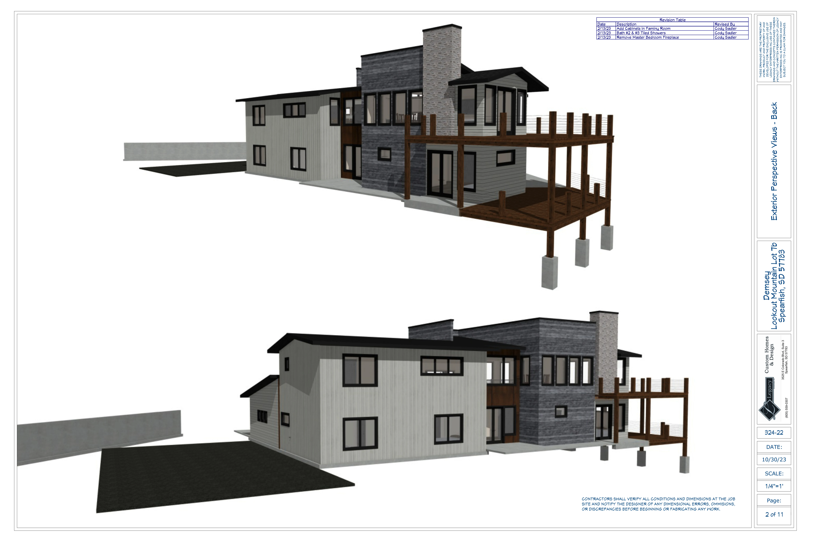
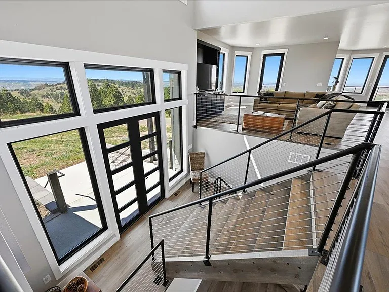
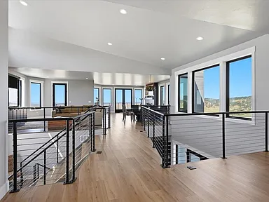
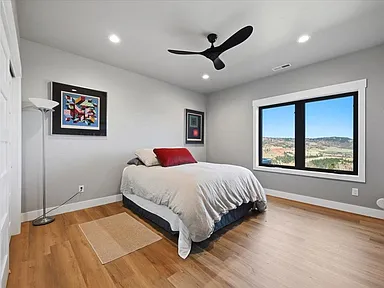
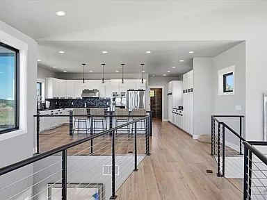
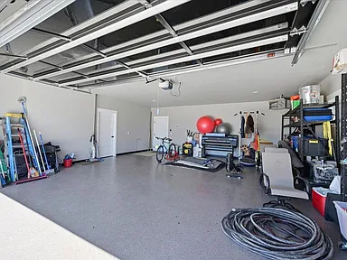

A private residence on two acres above Spearfish, in the Northern Black Hills of South Dakota — from plans originally drawn by the late Laguna Beach architect Mark Singer, and completed in 2023. It is offered furnished, in full, to a single qualified buyer.
The pages that follow describe the provenance of the design, the house as built, the site and its surrounding country, the framework of domicile in South Dakota, and the terms of introduction. A complete schedule of furnishings, art, and equipment — along with additional photography and documentation — will be provided to qualified buyers on request.
Mark Singer (1948–2017) practiced from a studio in Laguna Beach for nearly thirty years. His body of work — residential, patient, and steadily awarded — drew on Frank Lloyd Wright, Richard Neutra, John Lautner, and Rudolph Schindler, and turned the language of California modernism toward the specific coastal light in which he lived. In its obituary the American Institute of Architects, Orange County chapter, counted the number of design awards he had received at close to twenty.
Singer's houses share a set of preoccupations that any of his clients would recognize on first walk-through: floor-to-ceiling glass, so that the surrounding landscape becomes a wall of the room; the deliberate pairing of old-world material — timber, stone — with unornamented modern detailing; and a way of seating a building into its terrain that reads, in his own phrase, as neither imposed nor apologized for.
The plans for 2111 Vantage Circle were drawn to those same principles. The site he was working with, however, was not Southern California but the Northern Black Hills: a two-acre parcel on Lookout Mountain, above the small city of Spearfish, with west-facing exposure over a valley and a treeline. What was built to those plans, and completed in 2023, is a Singer residence in an entirely different register — the coastal architect's grammar, executed for the interior west.
The house is arranged over two levels, roughly thirty-seven hundred square feet inclusive of a full walkout below, and appointed for four bedrooms and two baths with an open great room, dining, and kitchen configured to the western view. Its exterior speaks in three materials: weathering flat metal, dimensional wood, and stone; a standing-seam metal roofline settles the mass of the building into the slope. A two-car garage — concrete, finished, heated, with a tinted glass door — is integrated into the plan rather than appended to it.
Interior surfaces have been chosen for the same longevity as the shell. Poplar trim, quartz counters, quartz on the fireplace facade and the vanity tops. Soft-close, dove-tailed maple cabinetry. Hardwood in the principal rooms; luxury vinyl plank in service areas; tile where tile belongs. A built-in media wall is integral to the great room rather than fitted to it. Mechanical systems include high-efficiency propane heat, central air, an owned two-tank water treatment system, and a tankless water heater; utilities include a shared water association and a private septic.
Legal description: Tract 7B, Lookout Mountain Subdivision, Lawrence County, South Dakota. Delivered new construction, 2023, per the Petrik Appraisals Uniform Residential Appraisal Report on file.
The property is offered furnished, in full. Among the works and appointments that convey:
A complete schedule of furnishings, art, and equipment — with photographic documentation of each collection in place — will be made available to qualified buyers on request.
The construction drawings, rendered by Legacy Enterprises of Spearfish from the plans originally drawn by Mark Singer. The full drawing set will be made available to qualified buyers on request.




Additional photography will be provided to qualified buyers on request.
















Spearfish is a small city of roughly fifteen thousand, situated along Interstate 90 at the northwestern edge of the Black Hills, forty miles from Rapid City. It has the specific quiet of a town that is close to everything and burdened by very little: a university — Black Hills State — that provides year-round energy without the pressures of scale, and a general aviation field, Black Hills Airport, that makes private travel a matter of minutes rather than hours.
Medical care in Spearfish is provided by Monument Health, which became the first health system in South Dakota to enter the Mayo Clinic Care Network. That membership is not decoration: it is a working relationship, and it is what allows a resident to receive local care with Mayo-caliber consultation as needed. For a residence purchased with a long horizon in mind, the significance of that arrangement is difficult to overstate.
The recreation surrounding the property is difficult to catalog without exhausting the reader. In short: Mount Rushmore and Crazy Horse within an easy drive; Sturgis at the edge; Spearfish Canyon at the door; the Mickelson Trail and hundreds of miles of hiking, cycling, and equestrian trail extending outward from it. Alpine skiing at Terry Peak and Deer Mountain, both within twenty minutes. Fly-fishing on Spearfish Creek. In all directions, more country than any single resident can reasonably use in a lifetime.
None of this is metropolitan, and that is the point. Spearfish is a place where the pressures characteristic of the larger American cities have not arrived, and where those who move here tend to do so deliberately.
South Dakota levies no state income tax, no capital gains tax, no estate tax, and no inheritance tax. The state abolished the rule against perpetuities in 1983, which established it as the country's original dynasty-trust jurisdiction; subsequent legislation has extended that position with some of the most durable trust-privacy provisions in force anywhere in the United States. The Supreme Court's ruling in North Carolina Department of Revenue v. Kaestner further clarified the constitutional treatment of trust income properly sitused in a jurisdiction of this kind.
The consequence, for families of substantial means, is that South Dakota has become the working domicile for a disproportionate share of American family capital. The presence at 2111 Vantage Circle would place the buyer inside that jurisdiction as of closing.
This paragraph describes the legal and tax framework of the State of South Dakota. It is not offered as advice, and it is not a substitute for counsel from qualified professionals engaged by the buyer. A qualified buyer should retain trust, tax, and estate counsel of their own choosing.
We look forward to meeting you. Please complete and submit the form. We will return a phone call very soon following verification.
Do not follow your navigation application. Whichever way you are travelling on Interstate 90 — east from Wyoming or west from Rapid City — the only exit to use is North 27th Street in Spearfish.
Routing software frequently proposes a different exit and sends visitors onto unmaintained back-country roads on the far side of the mountain. This is the single most common way people go astray. Come to North 27th Street, whatever your device tells you.
The house stands alone at the summit.
There is no other.
It sits perched at the top of the mountain and can be seen from a considerable distance.
If you can see it, you are on the right road.
Mobile coverage is intermittent on the mountain. Visitors are encouraged to save or print these directions before leaving the interstate.
We are pleased to have selected Grand Sotheby's International Realty and Gregory Allen Art to represent our family in the sale of our home.


Photography by Gregory Allen Art, provided courtesy of Grand Sotheby's International Realty.


A cinematic walkthrough of 2111 Vantage Circle, by Gregory Allen Art.